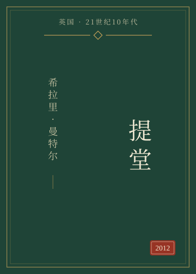
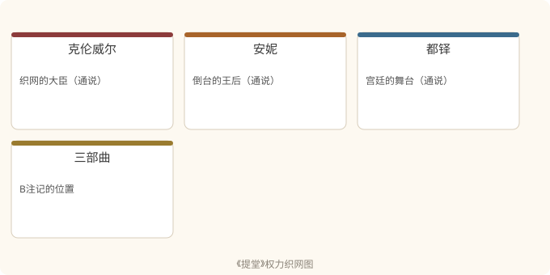

提堂
一、基本信息
| 作者 | 曼特尔 |
|---|---|
| 成书/出版 | 2012年（作者页注记：Britannica——提堂 (2012)——三部曲之一） Hilary Mantel — Encyclopaedia Britannica（百科全书） |
| 国别/地区 | 英国 |
| 时代 | 现当代 · 21世纪10年代 |
| 体裁 | 长篇小说 |
| 语言 | 英语 |

《提堂》权力织网图（主题·结构图）
二、创作背景
作者页注记：提堂 (2012)、镜与光 (2020)——'三部曲（Britannica）'。
Britannica：曼特尔——都铎历史小说（作者页交叉——克伦威尔三部曲）。
题材（通说待核）：克伦威尔与安妮·博林的倒台——第二部。
三、内容脉络
（通说待核）安妮·博林的审判：克伦威尔的织网。
（通说待核）'提堂'（Bring up the Bodies）：召唤嫌疑人。
四、主要人物表
| 人物 | 身份 | 说明 |
|---|---|---|
| 托马斯·克伦威尔 | 首席国务大臣 | （通说待核） |
| 安妮·博林 | 王后 | （通说待核） |
五、主题与艺术特点
- 权力机器的运转（通说待核）。
- '克伦威尔三部曲'之二（B注记）。
- 历史小说的当代声誉（布克奖说——通说待核）。
六、影响与评论
- Britannica：三部曲（作者页注记）。
Hilary Mantel — Encyclopaedia Britannica（百科全书） - Britannica：《狼厅》2009布克奖说（作者页交叉——待核）。
Hilary Mantel — Encyclopaedia Britannica（百科全书）
七、阅读建议
难点
- 都铎宫廷史。
- '现在时'叙述（通说待核）。
- 《提堂》中译本（上海译文等——通说待核）。
- 英文原版。
三部曲第二部；先读《狼厅》。
八、待核实
- 2012布克奖说待核。
- 克伦威尔/安妮人名核对（通说）。
- '三部曲'卷次核对。